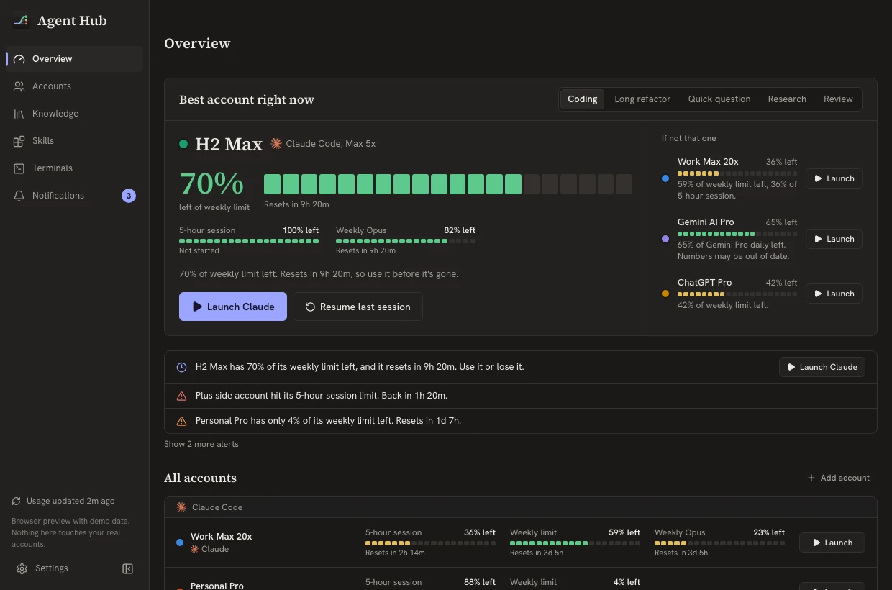
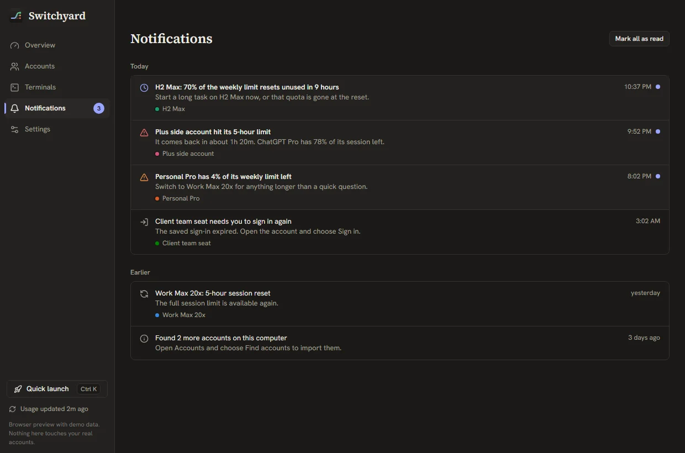
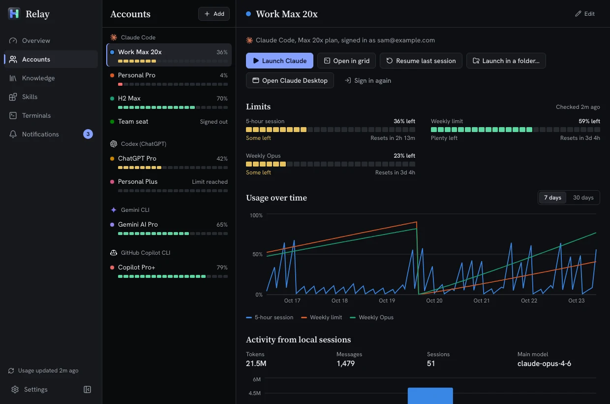
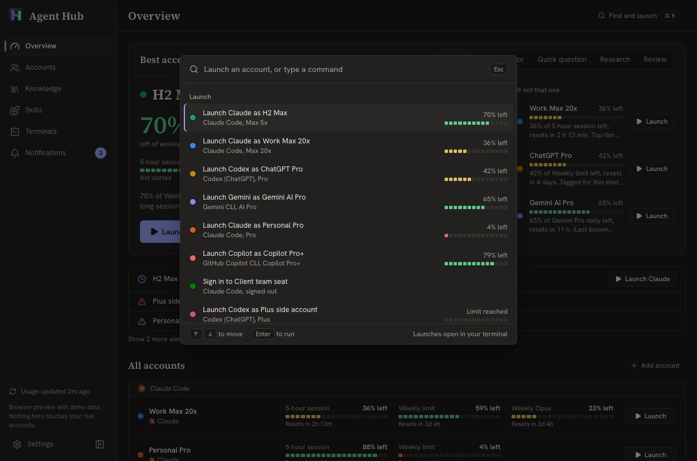

Switch your work to the account that still has quota.
Agent Hub keeps every Claude, ChatGPT, Gemini and Copilot account you pay for signed in side by side, shows how much of each limit is left, and opens Claude Code, Codex, Gemini CLI or Copilot CLI with the one you pick.
Free and open source under the MIT license. No account, no server, no telemetry.
The problem
Two Claude Max plans, ChatGPT Pro, a Copilot seat. One hits its 5-hour limit in the middle of a task, so you log out, log in to another, guess which one still has quota, and on Sunday a weekly limit resets with of it never used.
One board for every limit you have
Meters show what is left, not what is used, because that is the number you act on. Green means plenty, red means you are about to stop.



A pick for the task in front of you
Choose coding, a long refactor, a quick question, research or review. Agent Hub weighs every account's session and weekly limits and tells you which one to use, with two fallbacks in case you disagree.
- H2 Max70% of weekly left, resets in 9h. Use it before it's gone.
- Work Max 20x59% of weekly left, 36% of the 5-hour session.
- ChatGPT Pro42% of weekly left.
Launch with the right account in one click
Each account lives in its own config folder, so switching never means logging out. Launch from the window, from the tray menu, or press Ctrl K (Cmd K on a Mac), type a name and press Enter. Your terminal opens with that account, or picks up your last session.

Every launch shows exactly what ran
$ CLAUDE_CONFIG_DIR=~/.claude-h2 claude
$ CODEX_HOME=~/.codex-pro codex
$ GEMINI_CLI_HOME=~/.gemini-ai-pro geminiClaude Desktop opens with the chosen account too. Nothing is copied between accounts unless you ask for it.
Several accounts side by side, in one window
The terminal grid runs up to nine AI CLIs at once, each pane on a different account with its own meter. When one hits its limit, the pane offers the next account with quota and resumes the same chat there.
> move billing to the new client Reading src/billing/client.ts Editing src/billing/invoice.ts 3 files changed
> write the migration for orders
Running tests (12 of 40)
› add tests for parseInvoice Wrote tests/parse_invoice.test.ts 9 passed
> summarize open issues labeled bug
Found 14 issues in 3 areas
Works with the tools you already use
Agent Hub uses each tool's own sign-in and its official CLI. It does not proxy your prompts or replace any app.
| Tool | Plans | Limits it tracks | Launches |
|---|---|---|---|
| Claude Code | Pro, Max 5x, Max 20x, Team | 5-hour session, weekly, weekly Opus | CLI and Claude Desktop |
| Codex CLI | ChatGPT Plus, Pro, Team | 5-hour and weekly windows | CLI |
| Gemini CLI | Google AI Pro, Ultra, free tier | Daily quota per model | CLI |
| GitHub Copilot CLI | Copilot Pro, Pro+, Business | Monthly premium requests | CLI |
Planned next: Cursor, Antigravity, Kiro, Amp and OpenRouter. Adding a provider means implementing one Rust trait, so pull requests are welcome.
Everything stays on your computer
- No Agent Hub server. No account with us, no telemetry, no analytics. Your data lives in the app's folder on your disk.
- Tokens go only where they came from. To read live limits, Agent Hub sends each account's own saved sign-in to that provider's own servers (its usage, profile and sign-in renewal endpoints), and nowhere else.
- Live usage is optional. Turn it off in Settings and Agent Hub works from local session logs only.
- Uninstall leaves your setup alone. Every CLI folder stays exactly as it was.
Running in a minute
-
Install
About 3 MB for Windows, macOS or Linux. It sits in the tray and starts with your computer if you want it to.
-
It finds your accounts
Agent Hub detects installed CLIs and the config folders already on your disk, including side-by-side ones like
~/.claude-work. Add a new account and you sign in once, in its own folder. -
Launch
Pick the account with quota left and your terminal opens with it. When it runs out, pass it on to the next one.
Questions
Is this allowed by the providers' terms?
Agent Hub does not get around any limit. Each account signs in through the tool's own login and runs the official CLI, and Agent Hub only reads the limits each provider already shows you. Whether you may hold several accounts with one provider is up to that provider, so check their terms for the plans you use.
Can Agent Hub see my chats or code?
No. It reads usage numbers and local session statistics such as token counts. It never sends your prompts, chats or code anywhere, and there is no Agent Hub server to send them to.
Does it work offline?
Launching works offline. Live limits need the network, because they come from each provider's usage endpoint. Without it, Agent Hub shows the last numbers it saw and when it saw them.
Does it run on Linux?
Yes. Download the .AppImage for any distribution or the .deb for Debian and Ubuntu.
Why does Windows warn me when I run the installer?
The early builds are not code-signed yet, so SmartScreen does not recognize them. Choose More info, then Run anyway. You can build from source if you prefer; the steps are in the README.
What does it cost?
Nothing. Agent Hub is open source under the MIT license. You keep paying your AI providers as you do now, just with less of it going to waste.
Use every plan you pay for.
Switch tracks instead of waiting for a reset.
v0.2.0 for Windows, macOS and Linux, about 3 MB.